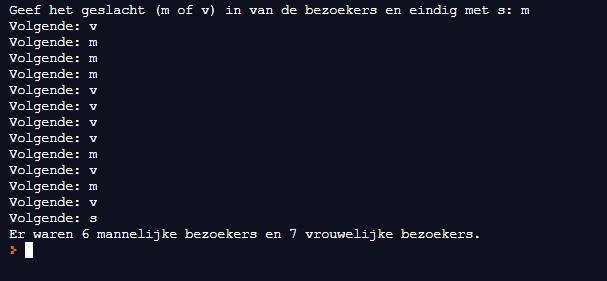

Bij de ingang van een beurs wordt geteld hoeveel vrouwen en hoeveel mannen er naar binnen gaan.
Voor deze telling wordt een programma gebruikt, waarbij je enkel op de v of de m (en enter) hoeft te drukken voor elke passerende bezoeker.
Aan het einde van de telling druk je op s, waarna het programma de uitslag van de telling geeft.
Hieronder vind je de schermafdruk van een uitvoering van het programma.
